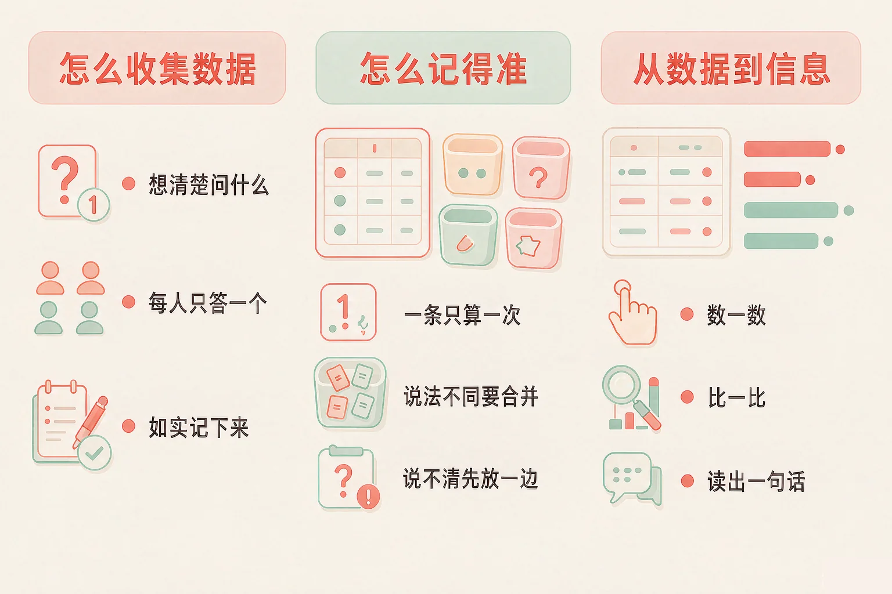
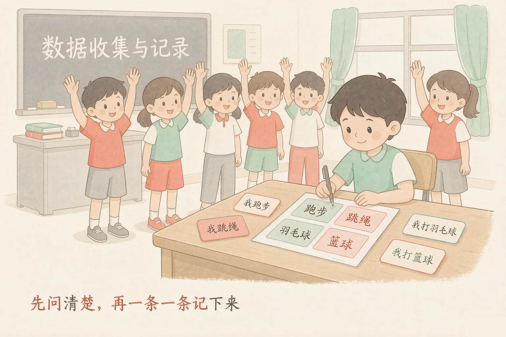
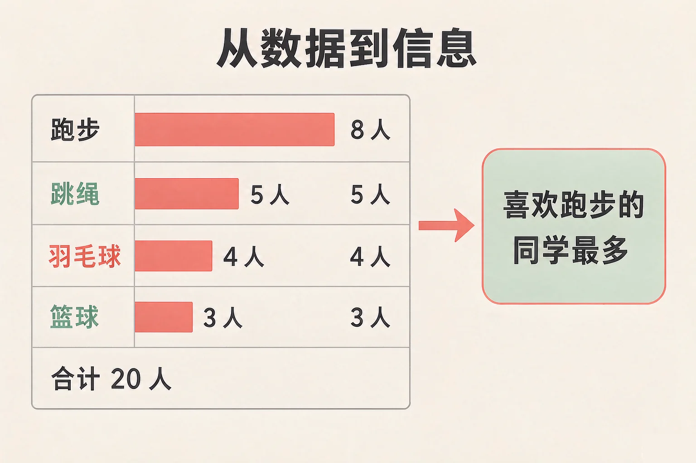

Gallery
v1.0.0 · skill v7.22.0
小学三年级 · 数据与编码
「好像喜欢跑步的人挺多」——到底是多少人？我们怎么才能问明白、数清楚？

选一个你真正好奇的问题，后面的动手活动都会围着它转。
选择或输入后，这节课会围绕你的问题展开。
先凭直觉选一个，选完立刻看到解释——错了也没关系，正好知道要重点听哪里。
1. 想知道咱们班同学最喜欢哪一项运动，下面哪个做法最好？
先定问法、每人只答一个、逐条记录，这样收来的数据才数得清、比得出。错因提醒：问了几个同学就下结论，或者心里先有了答案再去挑人问，收来的不是数据，是偏见——这是收集数据时最常见的错误。
2. 记录的时候，一条写的是「打羽毛球」，另一条写的是「羽毛球」，它们应该算：
说法不同，说的还是同一件事，就要归到同一个类，否则统计会漏掉一批人。错因提醒：不要看到字不一样就当成两类——分类标准要统一。
3. 已经记下来的十二条记录，能直接告诉我们什么？
一堆记录还是数据，数一数、比一比，它才变成能回答问题的信息。错因提醒：很多同学误认为「记完就完事了」，其实统计和比较才是关键的一步。
为什么要学这一课？
我们平时会说「好多同学喜欢跑步」（And）；可「好多」到底是多少人，两个人说的可能不一样，凭感觉说不清（But）；所以我们先去问、再把答案一条一条如实记下来，这些记录就是数据（Therefore）。
你问同学最喜欢哪一项运动，每听到一个就写一条：跑步、跳绳、羽毛球……这些一条一条记录下来的答案，就是数据。

只收集和这个问题有关的信息就够。同学的姓名、住址、电话号码，跟「喜欢哪项运动」没有关系，不要记——少收集一点无关的信息，就是多一分安全。
🔍 深层理解 换个角度再看一遍这件事，看看能不能说出背后的原理。
看见它：一张写满答案的记录纸，看着乱，其实每一条都是一个同学真实回答过的话。
比较它：「好像喜欢跑步的人挺多」和「喜欢跑步的有 4 人」——前一句是感觉，后一句才是数据。
迁移它：要调查的事都能这样办：先定问法，再如实记，最后数一数。运动会报名、班级读书角选书，用的都是同一套办法。
调查的问题：你最喜欢哪一项运动？（每人只说一个）先点一张记录卡片，再点你认为对的筐。
点一条记录，开始归类。
为什么这一条这么要紧？
记下来的答案看着乱，但只要分类分得准，数一数就清楚了（And）；可一旦有一条记录同时落进两个类，或者说法不同被拆成两类，数出来的总人数就会对不上（But）；所以分类标准必须唯一、统一，实在说不清的先单独放一边（Therefore）。
把记录归类的时候，有三条规矩，一条都不能少。
① 唯一
同一条记录只能进一个类，不能两边都算。
② 统一
说法不同、意思一样的，归到同一类。
③ 有去处
说不清的先放「一时说不准的」，问清楚再归。
看到「跑步和跳绳都喜欢」里有「跑步」两个字，就把它归到跑步这一类。这样一来，同一个人被数了两次，总数超过了实际人数，后面的结论也就靠不住了。
一张合格的记录表要满足三件事：问得清楚、每人只答一个、选项不重不漏。请逐张体检。
记录表 A 问题：你最喜欢什么水果？
选项：苹果 ｜ 香蕉 ｜ 苹果和香蕉 ｜ 西瓜 ｜ 其他
记录表 B 问题：你每天大约睡几个小时？
选项：不到 9 小时 ｜ 9 到 10 小时 ｜ 超过 10 小时
记录表 C 问题：你喜欢哪些运动？
选项：跑步 ｜ 跳绳 ｜ 篮球
三张都体检完以后，你会发现：问题问得好不好，早在收集数据之前就决定了后面能不能数清楚。
题目：小组要调查「全班同学每天读多长时间课外书」，设计的选项是：不到二十分钟 ｜ 二十分钟到四十分钟 ｜ 四十分钟以上 ｜ 其他。这张记录表能用吗？请说明理由。

把选项改成「二十分钟以内 ｜ 二十分钟到四十分钟 ｜ 半小时以上」。看起来更细了，其实「二十分钟到四十分钟」和「半小时以上」打架——一个人可能同时落进两格。分类标准不唯一，这张表就必须改。
先凭直觉选一个，选完立刻看到解释——错了也没关系，正好知道要重点听哪里。
1. 记录里出现了「打羽毛球」和「羽毛球」两种写法，应该怎么处理？
说法不同、意思一样，就要合并成同一类，不然统计会漏掉一批人。错因提醒：常见错误是看到字不一样就当成两类。分类标准要统一，统一的是「意思」，不是「字面」。
2. 有一条记录写的是「跑步和跳绳都喜欢」，最好的处理办法是：
说不清属于哪一类的，先单独放一边，问清楚再归，这样统计才不会失真。错因提醒：最容易犯的错就是硬塞——随便归一类、或者两边各算一次，都会让人数超过实际人数。
3. 记录全部记完以后，接下来最该做的是：
数一数、比一比，数据才变成能回答问题的信息。错因提醒：不要把「收集完」当成「做完了」。挑着看自己爱看的记录，那又回到凭感觉说话了。
下面是统计好的结果（共 20 位同学回答）。请判断每一条说法，是这张表支持的，还是表里根本没有告诉我们。
合计：20 人
在我们班这个班里，喜欢跑步的同学最多。
这次一共有 20 位同学回答了调查。
全校的同学都喜欢跑步。
喜欢跳绳的同学，跑步也一定很厉害。
再想一想，写下来：
你自己还能从这张表里读出一条什么信息？反过来，如果要办一场班级运动会，这张表能帮你做什么决定？
先凭直觉选一个，选完立刻看到解释——错了也没关系，正好知道要重点听哪里。
1. 小组调查「全班同学每天读多长时间课外书」，记录表上还要不要记下每位同学的姓名和家庭住址？
收集数据只收和问题有关的信息。姓名、住址和「读多久书」没有关系，多收就是用不上的风险。错因提醒：常见错误是觉得「多记一点总没坏处」——和问题无关的个人信息，一条也不该多问。
2. 「喜欢跳绳的同学比喜欢跑步的少」，这句话属于：
记录纸上一条一条答案是数据；数过、比过之后读出来的那句话，才是信息。错因提醒：不要把数据和信息搞混，它们中间隔着「统计」这一步。
3. 有位同学的答案你没听清楚，不能确定属于哪一类，最好的做法是：
先放一边、问清楚再归，统计才不会失真，这位同学的答案也不会被丢掉。错因提醒：「猜一个」和「划掉」都是常见做法，但一个让数据不准，一个让人被漏掉。
回到开头那个问题：「好像喜欢跑步的人挺多」只是感觉；把二十位同学的答案一条条记下来、归好类、数一数，你才敢说：喜欢跑步的最多，有 4 位同学。这句是数出来的，不是猜的。
给别人讲一遍：请用「数据、分类、信息」这三个词，说清楚你打算怎么调查一件小事。
再动一动手：做一张表——三行五列，写出你要问的问题、候选的选项，留好「其他」那一栏。
三层练习，做完第一、二层就算通关；第三层留给愿意继续探索的同学。
⭐ 基础巩固（必做）
⭐⭐ 能力应用（必做）
⭐⭐⭐ 迁移挑战（选做）
左边是学它之前要先会的，右边是学会之后可以继续探索的，下面是同一领域的伙伴知识。
图谱正在加载：首次进入需下载知识索引（约 1–3 秒），加载完成后本行会自动消失。